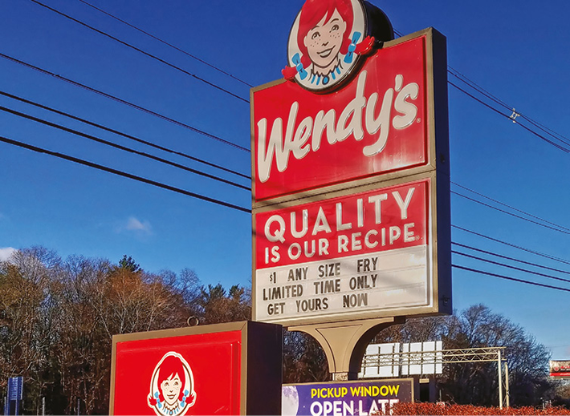

We live in a consumerist society in which it has become quite common to keep buying stuff out of impulse. In most households across the globe it is possible to step on kid’s toys occupying more space than necessary, books piling up, and an overwhelming quantity of clothes and house appliances. But do we need all of that? Better yet, will we ever have time to make use of all the things we feel the urge to buy? What is it that drives us to keep on purchasing things that we don’t need?
Some might argue that we buy – particularly when it is an impulse purchase – because we get a dopamine rush. It is like the act of shopping activates pleasure-related areas in our brains. Other possible reasons that explain our tendency to succumb to the temptation of buying are related to anxiety, unhappiness, need of control, to name a few. Whatever the cause of this behavior might be, getting a better understanding of this phenomenon and reach for solutions has become one of the biggest contemporary man’s concerns.
• Do you think you or your family buy more things than you need? Give some examples.
• Is it possible to live with less?
• What do you think are the most common things that people buy out of impulse?
Neste capítulo serão abordadas as habilidades
EM13LGG403
Dive in
Let’s read the text below.
Is Impulse Buying Hurting Your Family? Kids Learning Bad Habit from Parents: study shows $200,000 wasted by the average consumer — and you never see it happen.
By Will deHoo
Ever seen this?
A kid in a grocery store randomly grabs an item from a low shelf for a parent to buy. The parent, without thinking, adds it to the cart. Or ever done this?
Realized you’ve bought something in the past that you never use, or really didn’t need. Ever felt this?
Had regret over something you’ve bought. Or felt this?
Stressed when a bill arrives.
From the day you were born, you have been surrounded by a marketing environment that is based on persuading you to spend money without planning — the definition of impulse buying.
If you think about it, isn’t the goal of virtually all marketing to get you to make an impulse buy? [...] In the air. Impulse buying messages — like the air we breathe — are omnipresent and accepted by us without thinking.
If you are an “average” consumer:
• At least 40% of all the money you spend in your entire lifetime will be on “Impulse buys”.
• You’ll buy something you don’t need, pay more than you need or buy something that can actually hurt you. […] Why do we fall for this?
Because impulse buys are thoughtless and effortless decisions. They don’t require brain power.
But learning to break the impulse-buying habit actually takes work! Marketers know it takes work, too. They know that if you’re faced with enough impulse decisions, you’ll eventually become fatigued. Bingo! You make a lot more impulse buys. How do we stop bad impulse buys?
You can retrain your brain. And in retraining your brain, you will influence the shopping habits of all people who regularly shop with you.
Start with a reality check.
• Take an “impulse-buying inventory” of your home. Did you find anything you bought but haven’t used or don’t really need?
• Think about your last visit to a store. Any store. Ask yourself this question about each item you bought: “Did I go into the store planning to buy that item?”
Keep your mind on a bigger goal than the impulse to buy. Life isn’t fun if you’re always telling yourself, “Don’t buy that!”. But if you look at impulse buying moments as chances to help you reach a bigger goal in your life, you’re taking positive action. For example, thinking: “Hey. If I don’t spend that twenty, my savings account can grow.” Or “If I skip that purchase, the vacation gets closer.”
Adopt core habits: [...] Always make a shopping list. Once you write down the items it will help to clarify what is really necessary and what is just impulse buying. Use the motto “if it isn’t on the list, question it!”, it will develop the habit of thoughtfull spending.
• Develop the shopping lists for more than groceries: Clothes. Housing items. Vacation goals. Major purchases like cars, homes and education.
• Expect marketing tricks. Have you ever bought a “jumbo” size of an item because you assumed it was cheaper in volume? Did you know that many times it isn’t cheaper?
• Budget money for impulse buys. Skipping all impulse buys is boring and self-defeating. Set a small “play” budget for you…
Every impulse buy has long-term consequences. Modifying even half of those buys can change your life financially.
DEHOO, Will. “Is impulse buying hurting your family?”. FoolProofMe. Available at <www.foolproofme.org/gullibility/article_2_0.php>. Accessed on August 17th, 2021.
1
The text lists some strategies to control impulse buying. One of these strategies is
to save a certain amount of money specifically for impulse buying.
to buy larger packages so as to save money.
to write lists of how impulse buying affects areas of your life, such as education and transportation.
to wait and leave impulse purchases for when vacation is coming.
2
Read the statements and write “yes” or “no” according to the text.
Impulse buying is genetic, and that’s why people do it. __________
Comparing a potential impulse purchase to a bigger goal may help you contain yourself. __________
Impulse purchases for education and self-improvement (such as downloading a book) are justifiable. __________
Impulse buying has no long-term consequences. __________
3
Read the text again and come up with another strategy to avoid impulse buying.
Speak out
Influences on consumer behaviour
• Do you think retailers’ selling strategies influence people to buy products they don’t need?
• What type of strategy do you find most effective?
Get together with a classmate and tell her or him what you think about it. Try to explain why you have this opinion.
Genitive case’s – The possessive form
The genitive case is a possessive form that shows some kind of relationship between one thing and another. It is formed by adding
an apostrophe
and the letter
s
to the noun. If the noun already ends in
s
, just add the apostrophe after the
s
.
Look at some examples
:
• To talk about the car that belongs to Romeo you can use
“Romeo’s car”
.
Luigi is Romeo’s grandson. They love to work in Romeo’s restored car.
To talk about the room that belongs to the boys you can use
“The boys’ room”.
To talk about clothes for teenagers you can use
“Teenagers’ clothes”.
To talk about the section with clothes for women in a department store you can use
“Women’s clothes department” .
To talk about a book that belongs to Lucas you can use
“Lucas’ book”
. If the book belongs to Lisa you can use
“Lisa’s book”
.
Those are Lisa’s books.
There are different possible relationships between nouns, therefore the genitive case can have different functions.
Different possible relationships between nouns
Examples
1
To express belonging or ownership
Olivia’s car (The car belongs to Olivia.)
Anne’s book (The book belongs to Anne.)
2
To express where someone works, studies or spends time
This is Jacob’s school. (Jacob goes to this school.)
This is Harry’s room. (Harry sleeps in this room.)
3
To express a relationship between people
Ellen is John’s mother.
Mark is Conrad’s boss.
4
To express intangible things
People admire Noah’s kindness. (Noah is a kind person.)
Paul’s hypocrisy is disgusting. (Paul is a hypocrite.)
Grammaring
4
Read the sentences and number them according to the previous table.
A father’s love for his kids is unconditional. ( )
Marianne’s book will be published next Wednesday. ( )
Megan’s favorite juice flavor is cashew.( )
Caleb’s mother is a lawyer.( )
I’m going to sleep at Linda’s tonight. ( )
When talking about the ownership of something by
more than one person
we use the
’s
in the last word/name, whereas to express individual ownership we use the
’s
in both parts. Sarah and Shane’s
place is beautiful (The place belongs to Sarah and Shane).
Layla’s and Barbara’s shoes are very expensive (Layla’s shoes are expensive, and Barbara’s shoes are expensive too).
These are Layla’s shoes; they are expensive.
Sarah and Shane live together in Spain.
These are Layla's shoes; they are expensive.
These are Barbara’s shoes; they are expensive too.
The
’s
is also used to refer to shops, restaurants, churches and colleges, using the name or job title of the owner. Look at the examples:
I want to go to
Wendy’s
for lunch. Wendy’s
service is very cordial and efficient.

Wendy’s facade in Lenoir, North Carolina, USA. The photo was taken on August 21th, 2018.
5
Rewrite the sentences using the genitive case.
The grandmother of Daniel and Jonathan has bought them new cell phones.
The sneakers of Jason and Karen are worn out. They need new ones.
Have you watched the advertisement for the new car of Volvo?
This coat belongs to my wife.
6
The following sentences contain grammatical mistakes. Rewrite them correctly.
This is the mans’ clothes department.
Can you go and find my book in James’s’ bedroom, please?
The childrens’ bookstore on Thompson Avenue is way too messy! I don’t like going there.
Many men don’t understand why womens’ shoes are so expensive.
7
Complete the following sentences with the nouns between parentheses in the genitive case.
This is ___________________ (Gabriel and Victoria) new house. They saved for years to buy it.
_______________ (Brazil) southernmost state is famous for having many shoes factories.
_______________(Chris and Tami) choices on clothes are always expensive.
The __________________ (children) car seats are on sale at that department store.
8
Write four sentences about your family’s buying and collecting habits. Use the genitive case. Follow the model. My grandmother’s collections of crystal glasses come from Italy. They were handmade in Murano island. It’s my grandma’s most valuable treasure.
9
Check (✓) the sentences where the
’s
corresponds to the genitive case.
( )
Adele’s a compulsive buyer. She has a hundred different lamps for her living and no place for it.
( )
Darla’s cousin had a garage sale last month that helped her declutter her house.
( )
Sophia’s first doll was given by her grandma. She has kept it since her childhood.
( )
The supermarket’s a 10-minute bus ride from here. And it’s on sale for candies.
( )
Antonio’s jackets are super fashion.
( )
Paul’s comic bookstore is always open online.
10
Match the columns.
Cross is one of London’s busiest stations. There are many small stores there.
My daughter studies at our school. She has the biggest collection of markers I’ve ever seen.
Antonio Carlos Jobim is one of
best-know musicians. He has sold thousands of albums.
My engine is broken. I will have to spend a lot of money on it.
( )
car’s
( )
friend’s
( )
Brazil’s
( )
King’s
PRACTICE IT!
Unesp
INSTRUÇÃO: Leia o texto para responder às questões 1, 2 e 3.
Analyze an advertisement
Peter Sells Sierra Gonzales
Not all advertisements make perfect sense. Not all of them promote or imply acceptance of social values that everyone would agree are what we should hope for, in an enlightened and civilized society. Some advertisements appear to degrade our images of ourselves, our language, and appear to move the emphasis of interaction in our society to (even more) consumerism. There may even be a dark, seamy, or seedy side to advertising. This is hardly surprising, as our society is indeed a consumer society, and it is highly capitalistic in the simplest sense. There is no doubt that advertising promotes a consumer culture, and helps create and perpetuate the ideology that creates the apparent need for the products it markets.
For our purposes here, none of this matters. Our task is to analyze advertisements, and to see if we can understand how they do what they do. We will leave the task of how we interpret our findings in the larger social, moral and cultural contexts for another occasion.
It is often said that advertising is irrational, and, again, that may well be true. But this is where the crossover between information and persuasion becomes important; an advertisement does not have to be factually informative (but it cannot be factually misleading).
In a discussion of what kind of benefit an advertisement might offer to a consumer, Jim Aitchison (1999) provides the following quote from Gary Goldsmith of Lowe & Partners, New York. It sums up perfectly what it is that one should look for in an advertisement. The question posed is “Is advertising more powerful if it offers a rational benefit?” Here is Goldsmith’s answer: “I don’t think you need to offer a rational benefit. I think you need to offer a benefit that a rational person can understand.”
(www.standford.edu. Adaptado)
1
O principal objetivo do texto é analisar
como muitos anúncios deixam de cumprir seu papel.
como anúncios valorizam a imagem do consumidor.
aspectos racionais e irracionais contidos em anúncios.
anúncios e procurar entender como cumprem seu papel.
elementos linguísticos e valores sociais em anúncios.
2
A resposta à questão observada no último parágrafo do texto foi:
benefícios racionais atenderão melhor às necessidades dos consumidores do produto anunciado.
não se deve pensar nos benefícios de um produto anunciado de maneira capitalista e racional.
anúncios precisam apresentar benefícios racionais, para que os consumidores possam entendê-los.
benefícios do produto anunciado devem ser compreendidos por pessoas que desconhecem o produto.
anúncios devem salientar qualidades de um produto que sejam entendidas de modo racional pelos consumidores.
3
A expressão
none of this matters
, no segundo parágrafo, refere-se
às características de anúncios mencionadas no primeiro parágrafo.
à falta de coerência e de sentido que certos anúncios podem conter.
às características positivas de anúncios mencionadas no texto.
à interpretação de anúncios de acordo com uma ideologia de consumo.
aos valores culturais, morais e sociais que caracterizam um anúncio.
FGV-SP 2016
Read the text and answer questions 4 through 8.
A Housing Meltdown Looms in Brazil as Builders Seek Debt Relief
By Julia Leite e Paula Sambo
August 26, 2015
Not long ago,
Brazil’s real-estate market
was one of the biggest symbols of the
country’s burgeoning economic might.
Now, it’s fallen victim to an ever-deepening recession.
PDG Realty SA, once the largest homebuilder by revenue, hired Rothschild last week to help restructure 5.8 billion reais ($1.6 billion) of debt after second-quarter net sales sank 88 percent. Earlier this month, Rossi Residencial SA, which has 2.5 billion reais in debt, also brought in advisers to “restructure operations and review strategies.” Since 2010, the builder has lost 99 percent of its stock-market value.
The real-estate industry, which is equal to about 10 percent of
Brazil’s economy
, is emerging as one of the latest casualties of a recession that analysts forecast will be its longest since the
1930s
. To make matters worse, interest rates are the highest in almost a decade while inflation is soaring. “There is no real estate company that survives without sales,” Bruno Mendonça Lima de Carvalho, the head of fixed income at Guide Investimentos SA, said from Sao Paulo. “You can’t import or export apartments. You’re relying solely on domestic activity.”
PDG tried to boost revenue by lowering prices, financing up to 20 percent of some home purchases and even offering to buy back apartments if banks deny financing. Still, it sold just 217 units in the second quarter on a net basis, compared with 1749 in 2014.
Negative Outlook
On Friday, Moody’s Investors Service cut PDG’s rating three levels to Caa3, citing the possibility of significant losses for bondholders and other lenders. Secured creditors may recover less than 80 percent in a default, according to Moody’s, which kept a negative outlook on the rating. “The company is facing additional liquidity pressures from a prolonged deterioration in industry dynamics, including weak sales speed, tight financing availability and declining real estate prices,” Moody’s said.
Sao Paulo-based Rossi said in an e-mailed response to questions that second quarter sales improved and that the company’s main focus is to reduce debt. Gross debt fell about 30 percent in the 12 months ended in June, Rossi said.
Home sales in Latin America’s biggest economy tumbled 14 percent in the first half of 2015, according to data from the national real estate institute. Builders cut new projects by 20 percent during that span, while available financing shrank by about a quarter.
Real’s Collapse
That’s a reversal from just two years ago, when real-estate prices in places like Rio de Janeiro and Sao Paulo had surged as much as 230 percent as rising incomes, a soaring real and record-low borrowing costs ignited a wave of home buying.
Brazilians find themselves in drastically different circumstances today. The currency fell 0.4 percent Wednesday as of 3:25 p.m. in New York, extending its loss this year to 26 percent. The jobless rate climbed to a five-year high of 7.5 percent last month.
The central bank boosted its key rate to 14.25 percent in July, making it ever more expensive to finance the purchase of a home. “It’s a matter of demand, and demand is really weak,” Will Landers, who manages Latin American stocks at BlackRock, said from Princeton, New Jersey. “We may have reached a peak in interest rates, but they should continue to be at these levels for a while. Consumers will stay on the sidelines because debt levels are still high, and employment will get worse.”
Business Week at www.bloomberg.com/news. (Adapted)
4
According to the block comprising the first four paragraphs,
despite the recent recession in Brazil, the real-estate industry still represents one of the main economic powerhouses in the country.
real estate businesses in Brazil are currently in their lowest position in relation to the economy of the country as a whole since the 1930s.
there is a marked contrast in the economic situation of the Brazilian real-estate industry today if compared to just a few years ago.
banks and real estate businesses are working together to try to offset the present crisis in the industry which Brazil is going through.
the real-estate industry as a whole in Brazil has sold less than 300 properties in the first half of the current year of 2015.
5
The third paragraph implies that
with the high interest rates prevailing in the country, most people can’t buy real estate.
the present inflation rate has not been experienced in Brazil since the first half of the twenty century.
the real-estate industry is not dealing in the exporting market due to the high inflation rates Brazil is currently going through.
when the domestic market is not operating properly, the real-estate industry should aim at the foreign markets.
high inflation rates are a casualty of the weak business market in the real-estate industry in Brazil.
6
The evaluation of the real-estate company by Moody’s, as explained in the fifth paragraph,
points out that its creditors will only receive 80% of what they invested this year.
cut the company from stock exchange dealings causing losses for bondholders.
reflects the fact that manufacturing activity in Brazil is harming other businesses.
predicts that the company it is evaluating will close down within this calendar year.
implies that the situation the company is in at this moment is not its own fault.
7
Rossi, one of the real-estate businesses mentioned in the article,
lost 30% of its net value in the last calendar year.
states that its situation has been improving recently.
has stopped selling in order to focus on reducing its debts.
seems to share exactly the same problems as PDG Realty S/A.
stopped trading its stock in the market in 2010.
8
Two years before the article was written, sales in real estate were high due to a few different reasons, among which was/were
Brazilian currency devaluation.
230% rise in most people’s income.
boost of Central Bank key rate.
low interest rates from banks.
climbing number of jobless individuals.
9
EPCar-MG2016 (Adapt.)
THE RELATIONSHIP BETWEEN FRIENDS AND TYPES OF FRIENDSHIP
Everyone has at least one best friend, some maybe even more. There are also those people who are just friends and also arch-enemies. People may think that just because they are your friends it means that they are your best friend. The thing is, even though they are your friend, the relationship between a best friend and a friend is different. [...]
Arch-enemies often know more about each other than two friends. In a comparison of personal relationships, friendship is considered to be closer than association, although a wide range of degrees of intimacy exists in friendships, arch-enemies, and associations. [...] The study of friendship is included in the fields of sociology, social psychology, anthropology, philosophy, and zoology. Even animals have familiars! Various academic theories of friendship have been proposed, among which are social exchange theory, equity theory, relational dialectics, and attachment styles. In Russia, one typically bestows very few people the status of “friend”.
These friendships, however, make up in intensity what they lack in number. Friends are entitled to call each other by their first names alone, and to use diminutives. A customary example of polite behavior is addressing “acquaintances” by full first name plus their patronymic. These could include relationships which elsewhere would be qualified as real friendships, such as workplace relationships of long standing, or neighbors with whom one shares an occasional meal or a social drink with.
Also in the Middle East and Central Asia, male friendships, while less restricted than in Russia, tend to be reserved and respectable in nature. They may use nicknames and diminutive forms of their first names. In countries like India, it is believed in some parts that friendship is a form of respect, not born out of fear or superiority. Friends are people who are equal in most standards, but still respect each other regardless of their attributes or shortcomings. [...]
According to a study documented in the June 2006 issue of the Journal American Sociological Review, Americans are thought to be suffering a loss in the quality and quantity of close friendships since at least 1985. The study’s results state that twenty-five percent of Americans have no close confidants, and the average total number of confidants per citizen has dropped from four to two. According to the study, Americans’ dependence on family as a safety net went up from fifty-seven percent to eighty percent; Americans dependence on a partner or spouse went up from five percent to nine percent.
[...]
Mark the option which shows the same meaning as in “Americans’ dependence on family” (last paragraph).
The family’s dependence on Americans’.
The Americans family dependence.
The Americans dependence of family’s.
The dependence of Americans on family.
10
EA CPCar-MG 2016
CYBERBULLYING ON THE RISE
Bullying among children and teenagers is not something new but it is getting more and more common by modern methods of communication.
Cyberbullying happens when an adolescent is put in danger by another child or teenager by photos or text messages sent to cell phones or posted on social networks. Sometimes cyberbullies send mails with sexual comments or take passwords of other teenagers and log on to websites with false identities. Children also play Internet games and make fun of each other in many ways.
A study by a Canadian University shows that half of the young people interviewed said that they suffer bullying. One of the reasons is the great use of cell phones over the past years. Today’s children are connected with each other electronically. They call friends every time they want or communicate with them on Facebook.
Cyberbullying is getting extremely popular because teens can stay anonymous. Many adolescents act this way because they feel frustrated or angry and want to punish somebody for something that happened to them. At other times they do it just for fun or because have nothing else to do. Parents usually don’t know their child is a cyberbully. They perceive it just when the victim or the victim’s parents contact them.
This kind of bullying is not as inoffensive as many people think. In some cases it can lead to suicide. Many countries have organized campaigns to inform adults and children of its dangers.
(Adapted from http://www.english-online.at/society/cyberbullying/cyberbullying-on-the-rise.htm)
Choose the option that has the same meaning of “Parents usually don’t know their child is a cyberbully.” (4th paragraph).
Parents’ child usually don’t know he is a cyberbully.
Parents child’s usually don’t know he is a cyberbully.
Child parents’ usually don’t know he is a cyberbully.
Child’s parents usually don’t know he is a cyberbull.
11
EEAR-SP 2016
A Region’s Soccer Strongmen are facing a hard fall
After rising as a governor under Brazil’s military dictatorship, José Maria Marin became such a towering figure in the world of Brazilian sports that the
headquarters
of the nation’s soccer federation was recently named in his honor.
Now, the United States Justice Department’s charging Mr. Marin, 83, and 13 other senior sports officials and executives across the Americas with taking part in a sweeping
bribery
and kickback scheme within FIFA, the governing body of global soccer.
Of the 14 men named as defendants in the indictment, all
but
two of them are citizens of Latin American and Caribbean nations, a reflection of the investigation’s focus on corruption in the hemisphere.
(Fonte: www.nytimes.com)
but:
exceto bribery:
suborno headquarters:
sede
All the extracts below, in the text, present a possessive noun, except:
“… the nation’s soccer federation…”
“… under Brazil’s military dictatorship…”
“… a reflection of the investigation’s focus…”
“… the United States Justice Department’s charging Mr. Marin…”
12
IFSul de Minas 2018
How has Princess Diana’s death changed the Royal Family?
The death of Princess Diana in 1997, and the public’s response to it, shook the House of Windsor.
Twenty years on, there’s been a coup at the palace. It was bloodless. All the royals remain standing. But the power has shifted.
The departure, earlier this month, of the Queen’s dedicated senior official Sir Christopher Geidt has meant her eldest son can exert more control over the monarchy’s direction of travel.
The comings and goings of courtiers excite those on the inside and leave outsiders cold.
However, recent changes should cheer Prince Charles. The heir who’s waited and waited is more content and less anguished.
He’s still driven by a desire to deliver change but the royal prophet in the wilderness on climate change has been embraced by the mainstream.
A prince once derided for talking to plants is praised for trying to save the planet.
With each year that passes, his mother will do less and he will do more.
There are fewer clouds on his horizon. It’s a horizon that was once obscured by the War of the Waleses: his televised admission of adultery, and his leaked comments about tampons.
Lasting influence
And yet, and yet. Whatever accommodation he reached with his first wife in life hasn’t survived her death. Diana haunts Charles.
A recent YouGov poll commissioned by the Press Association suggested that the number of people who believe the Prince of Wales has made a positive contribution to the Royal Family has fallen over the past four years, down from 60% to 36%.
This polling took place at a time when it was hard to escape references to Charles’s painful past.
Newspapers and television channels have reflected at length on the influence of Diana, Princess of Wales, an influence that stretched from fashion to the British monarchy.
It’s been a month of coverage that must have perplexed anyone under the age of 25 and would have confused a visiting Martian.
Charles’s many supporters will argue that Diana’s adverse impact on his popularity will recede with each passing year. But 20 years on, her influence still registers. (...)
Disponível em: http://www.bbc.com/news/uk-41094816/. Acesso em: Agosto de 2017.
Assinale a questão que NÃO possui o mesmo uso do “Genitive Case” como na seguinte parte do texto: “Charles’s many supporters will argue (...)”:
“It’s been a month of coverage”
“over the monarchy’s direction of travel”
“it was hard to escape references to Charles’s painful past”
“of the Queen’s dedicated senior official Sir Christopher Geidt”
13
Col. Naval 2017
Mark the
INCORRECT
option according to the genitive case.
The door’s car is open.
The world’s population is increasing.
I’m going to Grandma’s.
Which are Fred’s and Eric’s cars?
This is my mother-in-law’s house.
Uema
Read the comics below and answer questions 14 and 15.
In the English language the
’s
has different grammatical uses. Choose the alternative in which the
’s
is being used in the text sentence: Who’s got my beach ball?
Past tense in the possessive case.
Present perfect of the verb to have.
Present simple in the genitive case.
Contraction verb to be in the present tense.
Contraction of the verb to be in the past tense.
15
The alternative which is similar in meaning to the text expression: “... right away...” in the second picture is